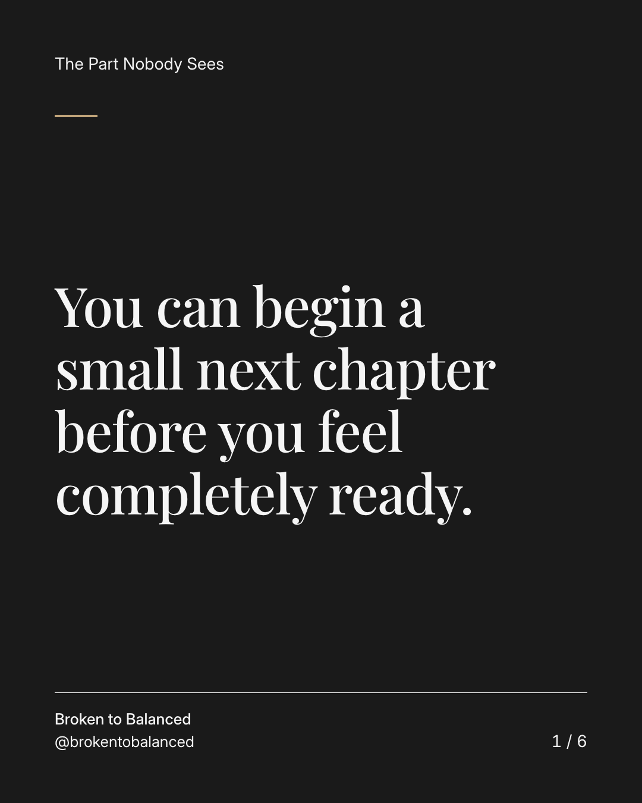
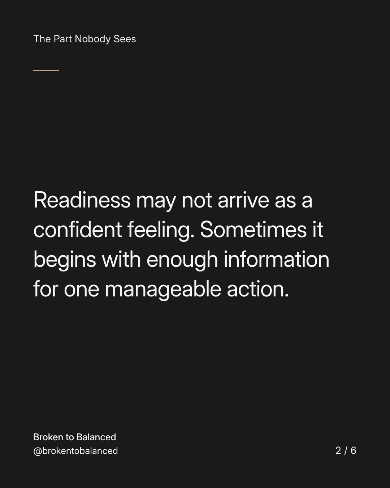
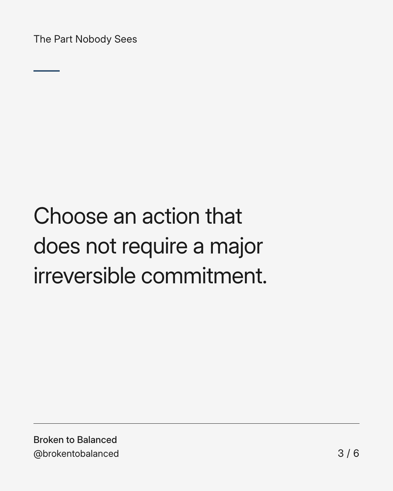
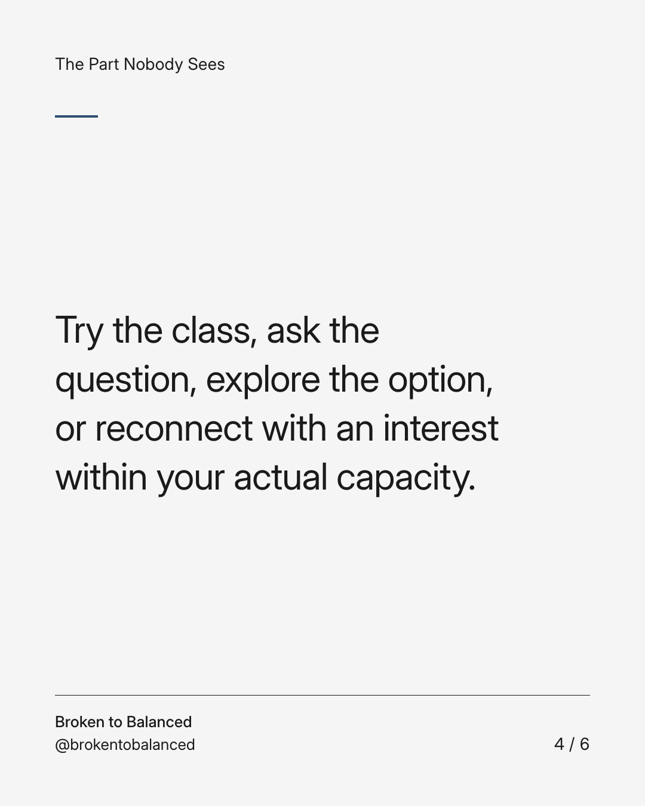
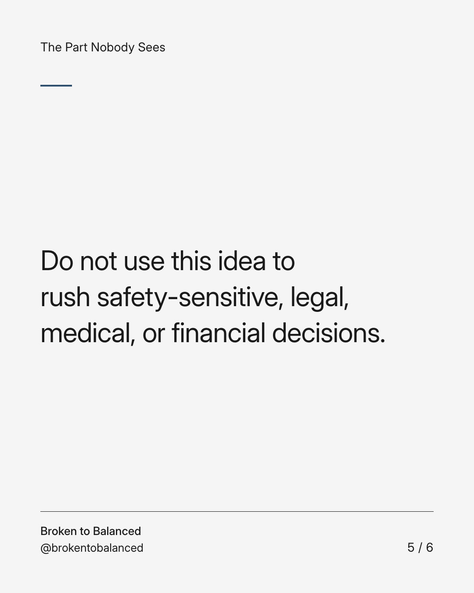
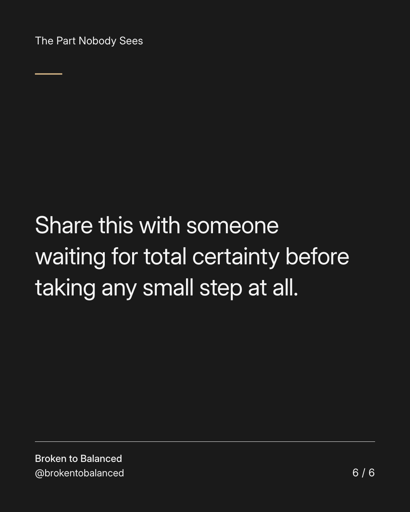

Exact text and accessibility text
You can begin a small next chapter before you feel completely ready.
Slide 1 of 6. You can begin a small next chapter before you feel completely ready.


Exact text and accessibility text
Readiness may not arrive as a confident feeling. Sometimes it begins with enough information for one manageable action.
Slide 2 of 6. Readiness may not arrive as a confident feeling. Sometimes it begins with enough information for one manageable action.


Exact text and accessibility text
Choose an action that does not require a major irreversible commitment.
Slide 3 of 6. Choose an action that does not require a major irreversible commitment.


Exact text and accessibility text
Try the class, ask the question, explore the option, or reconnect with an interest within your actual capacity.
Slide 4 of 6. Try the class, ask the question, explore the option, or reconnect with an interest within your actual capacity.


Exact text and accessibility text
Do not use this idea to rush safety-sensitive, legal, medical, or financial decisions.
Slide 5 of 6. Do not use this idea to rush safety-sensitive, legal, medical, or financial decisions.


Exact text and accessibility text
Share this with someone waiting for total certainty before taking any small step at all.
Slide 6 of 6. Share this with someone waiting for total certainty before taking any small step at all.
Exact caption
Plain-text fallback: select and copy the caption.